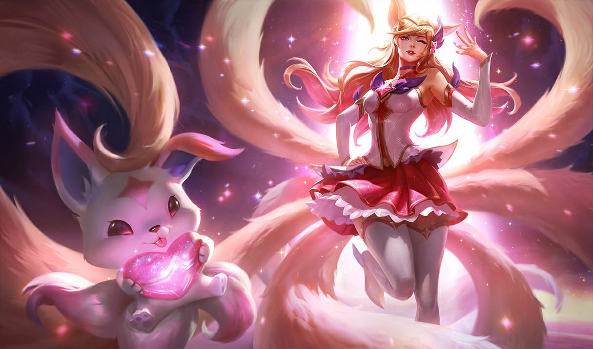
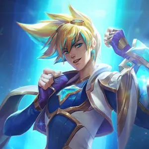
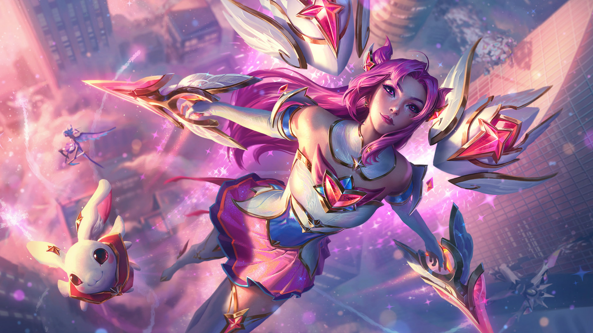
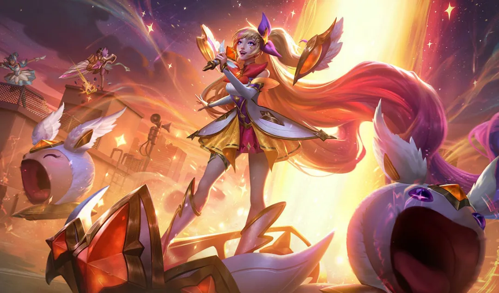

About Star Guardians
In a vast and dark universe, young warriors are chosen by fate to protect the light of the stars. They are destined to burn bright, but collapse as furiously as they burn.

Meet The Guardians

Ahri is a charismatic captain who leads a team of both new and veteran Star Guardians, from the outer edges of the cosmos

Ezreal was a born explorer with boundless curiosity for the world around him, and becoming a Star Guardian only served to further fuel his appetite for discovery

A natural born leader and defender of the weak, Kai’Sa idolizes the Star Guardians as well as all that they stand for

A pop sensation across the galaxy, Seraphine can't wait to team up with the Star Guardians for a brand new collab.
"The Star Guardians are fated to protect the universe. But who protects us? Some say our end is already written. But I stopped believing in destiny. If our story won't change... I will. This time, we decide our own destiny."
-Ahri, Year 3 Team Captain